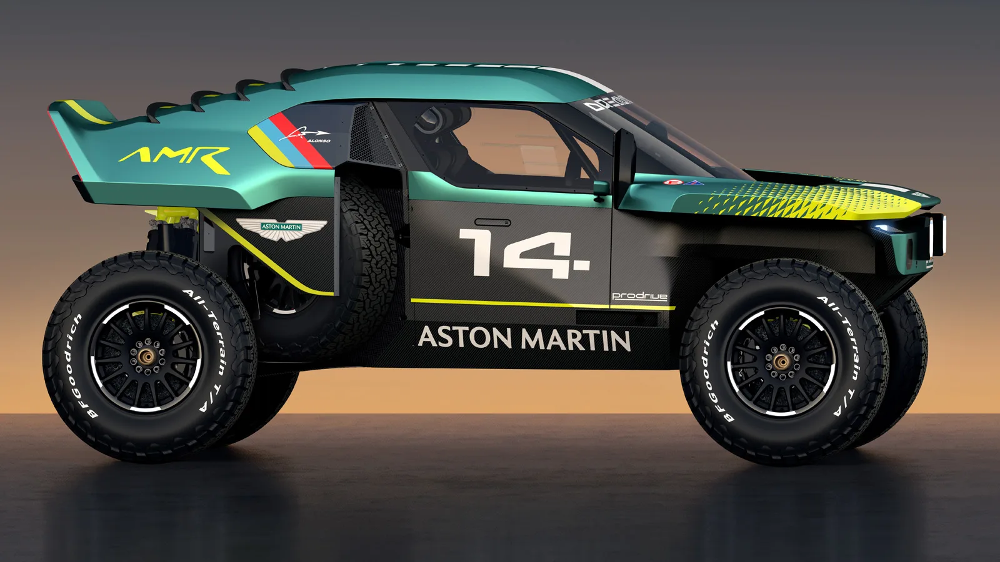

Aston Martin · 賽車首發 · 英國2026-11-17
Aston Martin Dreadnought 拉力車亮相：三台出戰 2027 達卡
Aston Martin enters Dakar 2027 with wild Dreadnought raider
Aston Martin 宣布 2027 年參加達卡拉力賽，派出三台以 Dreadnought 概念車為造型基礎的拉力車，由 Prodrive 操刀、沿用 T1+ 底盤與 Nissan 系雙渦輪 V6。車手為 Fernando Alonso、Sébastien Loeb 與 Lucas Moraes。
設計解析 Design Notes
- 造型來源粗獷外形直接來自 Dreadnought 概念車，和品牌量產車幾乎沒有關聯。
- 面處理延續限量車 Valour 的銳利稜線與鈍平面。
- 車尾百葉式車尾開口，強化機能感。
- 架構造型包覆 Prodrive 已奪冠的 T1+ 架構，與 Dacia Sandrider 同底。